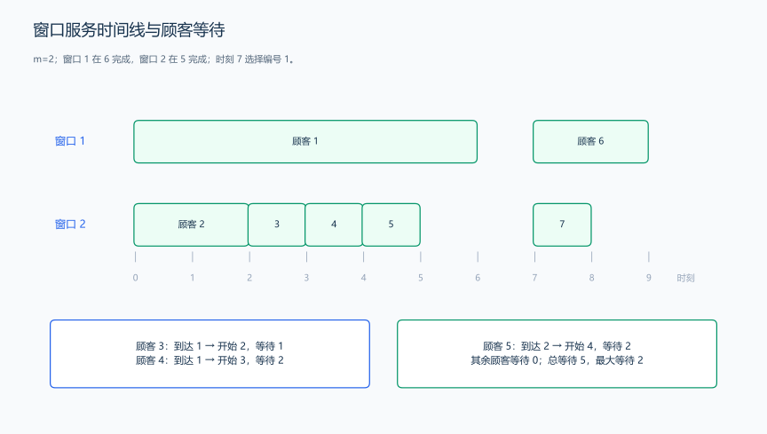
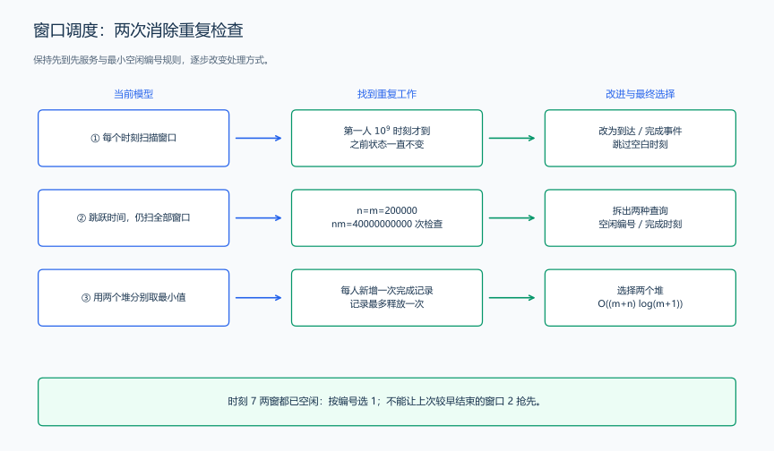
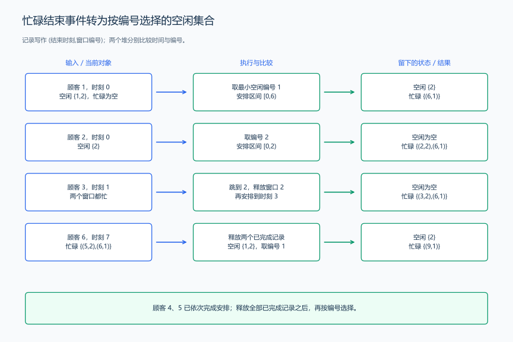

（十三） 复杂题面到事件模拟的完整推导
复杂题目常把“谁先处理、当前能做什么、同一时刻先执行哪个动作”藏在几段文字中。先把规则逐项落实，再决定需要哪些容器。
1. 完整示例：多个服务窗口的排队
题目原文（自拟）： 服务大厅有 m 个窗口，编号为 1 到 m，时刻 0 都空闲。n 位顾客按输入顺序排队，第 i 位顾客在时刻 arrival[i] 到达，办理业务需要 duration[i] 个时间单位。
大厅按以下规则安排：
- 到达时间按非递减顺序给出；同时到达的顾客按输入顺序排队。后面的顾客不能越过仍在等待的前面顾客。
- 排在最前面的顾客一旦有空闲窗口就立即开始；多个窗口空闲时，选择编号最小的窗口。
- 没有空闲窗口时，顾客继续等待。某窗口在时刻 t 结束办理，就能在同一时刻 t 接待下一位顾客。
- 一位顾客办理期间占用一个窗口，不能中断或更换窗口。结束时刻等于开始时刻加办理时长。
第一行输入 m、n，接下来 n 行各输入到达时刻和办理时长。\(1\le m,n\le200000\)，\(0\le arrival[i]\le10^9\)，\(1\le duration[i]\le10^6\)。按输入顺序，每位顾客输出一行“窗口编号 开始时刻 结束时刻”；最后输出一行“总等待时间 最大等待时间”。
样例输入：
2 7
0 6
0 2
1 1
1 1
2 1
7 2
7 1样例输出：
1 0 6
2 0 2
2 2 3
2 3 4
2 4 5
1 7 9
2 7 8
5 22. 提取对象、时间与动作先后
题目中的大厅装饰和业务名称不影响安排；每位顾客需要到达时刻、办理时长和排队次序。每个窗口需要编号、是否空闲，以及忙碌时的结束时刻。
| 文字规则 | 形式化关系 | 要执行的动作 |
|---|---|---|
| 先到先服务，同时到达按输入顺序 | 顾客依次处理，当前顾客开始后再安排下一位 | 用一个顺序循环处理输入 |
| 顾客已经到达才能开始 | start>=arrival |
当前安排时刻至少推进到 arrival |
| 结束时刻就能接待下一人 | finish<=now 的窗口已经空闲 |
选择窗口之前，释放全部已完成窗口 |
| 空闲时选择编号最小的窗口 | 在空闲编号中取最小值 | 按编号维护小根堆 |
| 全部忙碌时等待下一次完成 | 推进到最小的 finish | 按结束时刻维护忙碌小根堆 |
| 总等待与最大等待 | wait=start-arrival |
累加 wait，并更新最大值 |
不能先排序办理时长来“减少等待”，因为那会改变题目已经指定的排队次序。本题让我们执行给定安排规则，两个等待统计量是安排完成后的结果。
3. 从逐时刻检查改成只处理事件
最直观的程序每个时间单位检查窗口。但两次到达或完成之间，窗口状态没有变化，反复检查会得到相同结果。一次业务持续 10^6 个时间单位时，就会有大量这样的重复检查。
因此只在顾客到达或业务完成时处理变化。用 now 保存“正在给当前顾客安排业务的时刻”。它至少是当前顾客的到达时刻；前一位已经等待到更晚才开始时，后一位也不能倒回过去抢先开始，所以取 now=max(now,arrival)。
先释放所有 finish<=now 的窗口，再选择空闲窗口。如果全部忙碌，把 now 推进到最早的结束时刻，重新释放，随后就能安排当前顾客。无须逐秒走过中间的空白时间。

顾客 3 到达时两个窗口都忙，等到时刻 2；顾客 4 仍排在后面，等到时刻 3。到时刻 7，两个窗口都已空闲，顾客 6 选择编号 1，即使窗口 2 更早在时刻 5 就结束了。
4. 三种调度模型的比较与选择
窗口题也能用几种方法完成。沿用同一题面和同一份顾客数据，逐步减少查找工作，不能把“选最小空闲编号”改成“选上次最早结束的窗口”。
| 候选模型 | 时间怎样前进 | 每次怎样选窗口 | 主要工作 |
|---|---|---|---|
| 逐时刻扫描 | 每次加一 | 扫描 m 个窗口，按编号找空闲窗口 | 到最后安排时刻 T，约 \(O(Tm+n)\) |
| 事件跳跃加数组扫描 | 没有空闲窗口时跳到最早完成时刻 | 扫描全部窗口，找最小空闲编号或最早完成时刻 | 每位顾客扫描窗口，\(O(nm)\) |
| 事件跳跃加两个堆 | 同样跳到到达或完成时刻 | 空闲堆找编号，忙碌堆找完成时刻 | \(O((m+n)\log(m+1))\) |
第一步，去掉无变化的时刻。 假如第一位顾客在时刻 \(10^9\) 到达，之前逐秒检查不会产生安排；m 为 200000 时，约有 \(2\times10^{14}\) 次窗口检查。直接令 now 到达顾客的 arrival，就能跳过这些重复判断。
第二步，去掉每位顾客对全部窗口的扫描。 跳跃时间后，若仍对每位顾客扫描 m 个窗口，n、m 同为 200000 时就是 \(4\times10^{10}\) 次窗口检查。真正需要的只有两个极小值：空闲编号的最小值、忙碌结束时刻的最小值。
第三步，分别维护这两种顺序。 两个堆让每次取最小值都发生在堆顶；插入和删除沿约 \(\log_2 m\) 层更新。m 为 200000 时，这个量级约为 18 层。每位顾客增加一份完成记录，每份记录最多释放一次，没有按时间长度或顾客数重复扫描全体窗口。

因此本题选择“事件跳跃＋空闲编号堆＋忙碌完成堆”。逐时刻模拟可以核对很短的手算数据；数组扫描可以作为小数据参照；两个堆用于完整规模。它们沿同一规则得到同一安排，优化的是重复检查次数。
5. 用两份顺序保存不同的选择依据
空闲时比较窗口编号，等待时比较结束时刻，这是两种不同的顺序。只用“上次结束时刻最小”的一个堆，会在样例时刻 7 错选窗口 2：它上次在 5 结束，窗口 1 在 6 结束，但现在两者都空闲，题目要求选编号 1。
因此维护两份集合：
freeWindows：保存空闲窗口编号，堆顶是最小编号。busyWindows：保存(结束时刻,窗口编号)，堆顶是最早结束的记录。
pair 先比较 first，再比较 second；greater 让 priority_queue 成为小根堆。完成时间相同时会先取出编号较小的记录，但释放过程会取出所有已完成窗口，然后才由空闲堆决定接待编号。

不能只释放一条记录再选窗口。例如两个窗口都在时刻 5 完成，当前顾客就在时刻 5 开始；全部释放后才能确定当前空闲的最小编号。
6. 把动作拆成可组合的函数
下面三段代码依次放入同一个源文件。第一段包含头文件、类型别名和释放函数；第二段实现一位顾客的安排；第三段初始化窗口、读取输入并输出结果，只有第三段包含 main。
<queue> 提供 priority_queue，<functional> 提供 greater，<utility> 提供 pair；<vector> 是堆的底层容器，<algorithm> 提供 max，<iostream> 提供输入输出。这些都是语法基础中已经使用过的接口。
#include <algorithm>
#include <functional>
#include <iostream>
#include <queue>
#include <utility>
#include <vector>
using namespace std;
using FinishEvent = pair<long long, int>;
using BusyHeap = priority_queue<FinishEvent, vector<FinishEvent>, greater<FinishEvent>>;
using FreeHeap = priority_queue<int, vector<int>, greater<int>>;
void releaseFinished(long long now, BusyHeap &busy, FreeHeap &freeWindows) {
while (!busy.empty() && busy.top().first <= now) {
// 先把本时刻全部已完成窗口变为空闲，再决定接待顺序。
freeWindows.push(busy.top().second);
busy.pop();
}
}释放函数解释： 每弹出一个忙碌记录，就把对应编号加入空闲堆。这是一份窗口状态从“忙碌”到“空闲”的转移，不是新增窗口。函数结束后，忙碌堆里的结束时刻全部大于 now。
pair<long long, int> serveCustomer(long long arrival, long long duration,
long long &now, BusyHeap &busy, FreeHeap &freeWindows) {
now = max(now, arrival); // 顾客到达且前面的顾客已经开始，才轮到本顾客。
releaseFinished(now, busy, freeWindows);
if (freeWindows.empty()) {
now = busy.top().first; // 全部忙碌，直接跳到下一次完成事件。
releaseFinished(now, busy, freeWindows);
}
int window = freeWindows.top(); // 此时按编号选择，而不是按旧结束时刻。
freeWindows.pop();
busy.push({now + duration, window}); // 接待后转入忙碌集合。
return {now, window}; // first 是开始时刻，second 是窗口编号。
}安排函数解释： 当前顾客能开始前，只可能被两件事阻止：自己还没到达，或所有窗口仍忙。前一个由 max 处理，后一个由最早完成事件处理。获得空闲窗口后立即开始，正好对应题目的安排规则。
int main() {
int m, n;
cin >> m >> n;
BusyHeap busy;
FreeHeap freeWindows;
for (int window = 1; window <= m; ++window) {
freeWindows.push(window); // 时刻 0 所有窗口空闲。
}
long long now = 0, totalWait = 0, maxWait = 0;
for (int i = 0; i < n; ++i) {
long long arrival, duration;
cin >> arrival >> duration;
auto [start, window] = serveCustomer(arrival, duration, now, busy, freeWindows);
long long wait = start - arrival;
totalWait += wait; // 等待不是办理时长，不计服务开始后的时间。
maxWait = max(maxWait, wait);
cout << window << ' ' << start << ' ' << start + duration << '\n';
}
cout << totalWait << ' ' << maxWait << '\n';
}7. 用完整样例逐项核对模型和代码
| 顾客 | 到达 / 时长 | 安排时刻的变化 | 选择窗口 | 开始 / 结束 | 等待 |
|---|---|---|---|---|---|
| 1 | 0 / 6 | 0，已有空闲窗口 | 1 | 0 / 6 | 0 |
| 2 | 0 / 2 | 0，窗口 2 空闲 | 2 | 0 / 2 | 0 |
| 3 | 1 / 1 | 0→1，全部忙；1→2，窗口 2 完成 | 2 | 2 / 3 | 1 |
| 4 | 1 / 1 | 保持 2，全部忙；2→3 | 2 | 3 / 4 | 2 |
| 5 | 2 / 1 | 保持 3，全部忙；3→4 | 2 | 4 / 5 | 2 |
| 6 | 7 / 2 | 4→7，窗口 2、1 都已完成 | 1 | 7 / 9 | 0 |
| 7 | 7 / 1 | 保持 7，窗口 2 空闲 | 2 | 7 / 8 | 0 |
等待时间为 0、0、1、2、2、0、0，总和为 5，最大值为 2。窗口 1 的业务区间为 [0,6)、[7,9)；窗口 2 为 [0,2)、[2,3)、[3,4)、[4,5)、[7,8)。结束时刻不再占用窗口，所以相邻区间可以首尾相接。
正确性核对： 处理下一位顾客前，已处理顾客的安排与规则一致，每个窗口恰好处于空闲或忙碌集合之一。释放只转移已完成窗口，不会提前空出窗口；没有空闲窗口时，最早完成之前无处办理，跳到该时刻不会跳过可安排的时刻；全部释放后选择最小空闲编号。安排当前顾客后，两个集合再次完整表示窗口状态。
复杂度计算： m 个窗口逐个压入空闲堆；每位顾客让一个窗口进入忙碌堆，它的完成记录最多弹出一次，再进入空闲堆。看似内外嵌套的释放循环，总共最多处理 n 次完成事件。每次堆操作的元素数最多为 m，总时间为 \(O((m+n)\log(m+1))\)，空间为 \(O(m)\)；顾客边读边处理，输出也逐行进行。
now 可能超过单个到达时刻：一个窗口连续办理 200000 份、每份耗时 10^6 的业务，会累计到 2×10^11。若这些顾客同时到达，等待总和为 (0+1+…+199999)×10^6=19999900000000000。把到达时刻、开始时刻、结束时刻和等待统计都保存为 long long，就能完整表示这些累计结果。
练习： 洛谷 P2058 — 海港、洛谷 P1065 — 作业调度方案（进阶，重新按它自己的机器与工序规则建模）。